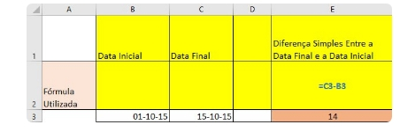
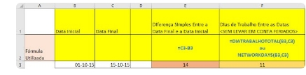
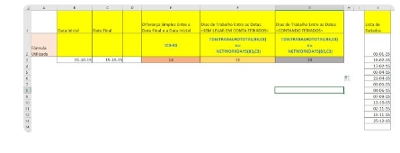

Muitas vezes precisamos calcular não apenas o número de dias entre datas, mas o número de dias úteis entre datas, inclusive levando em conta os feriados. Quem nos mandou esta dica foi nosso parceiro Sérgio Grinberg do site Sepetiba Acha Tudo. Não deixe de dar uma passadinha por lá e conferir o que mais de útil ele posta por lá.
Para fazermos isso vamos utilizar uma função do Excel denominada =DiaTrabalhoTotal(Data inicial, data final, [feriados]). No exemplo abaixo temos 2 datas distintas: 01 de Outubro de 2015 como data inicial e 15 de Outubro 2015 como data final.
Digamos que você quer saber quantos dias há nesse intervalo. Caso você faça a conta do valor final menos o valor inicial, o que seria lógico e com certeza a primeira coisa que vem nas nossas cabeças, o resultado será 14, afinal, dia 15 menos dia 01 resulta em 14. Repare na fórmula =C3-B3 e no resultado de 14
Agora, se você quer fazer o cálculo levando em conta somente os dias úteis, e com isso excluindo os sábados e domingos (essa é a configuração padrão do Excel) é só utilizarmos a sintaxe =DiaTrabalhoTotal(B3,C3).
O resultado será de 11 dias, afinal, entre os dias 01 e 15 de Outubro serão desconsiderados os dias 03, 04, 10 e 11, sendo eles sábados e domingos.
E se quisermos descontar os feriados? Muito fácil. Para isso é só adicionarmos os dias correspondentes no final da fórmula. Lembra que na sintaxe há o campo [feriados]? Pois bem, como você já deve ter aprendido conosco, quando algum campo está entre colchetes significa que ele é opcional, e se for inserido é levado em conta; se for deixado em branco não tem problema algum
Nos exemplos acima não utilizamos o campo feriado e por isso nenhum deles foi descontado dos dias úteis de nosso resultado, porém vamos fazer algo diferente agora:
Veja que criamos uma lista com os feriados do período e aplicamos como parâmentro no campo correspondente. Assim, com a fórmula =DiaTrabalhoTotal(B3,C3, J2:J8) recebemos o resultado de 10 dias úteis após descontados os sábados, domingos e também os feriados (dia 12 de outubro).